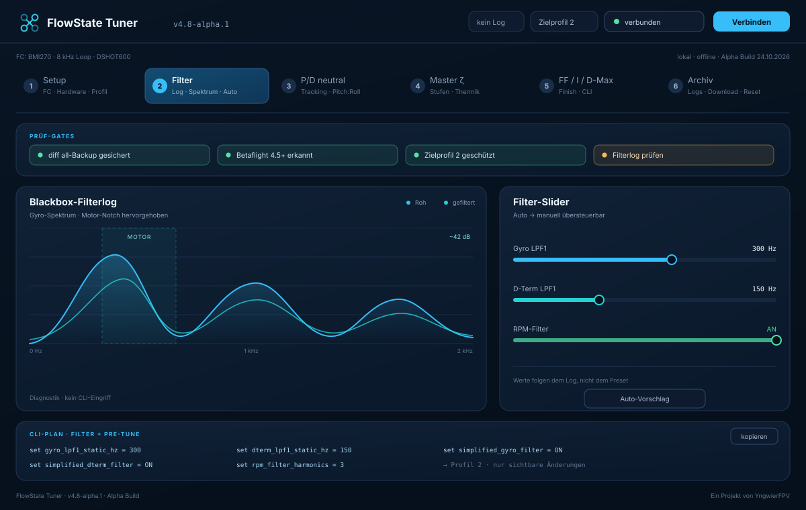

01
Messen · Rechnen · Schreiben
FlowState Tuner
Liest Blackbox- und Dataflash-Logs, leitet Filter- und PID-Werte ab und zeigt jeden Schritt als lesbaren CLI-Plan. Geschrieben wird über Web Serial — nur nach Sicherung und Bestätigung.
- Sechs Phasen, jede mit eigenem Abschluss
- Backup-, Firmware- und Profil-Gate vor jedem Schreiben
- Chrome, Edge oder Opera am Desktop für die FC-Verbindung
Alpha: Schreiben auf eigene Gefahr. Der Schreibpfad ist an echter Hardware und im Flug nicht erprobt — der Plan lässt sich vorher vollständig lesen und prüfen.